彻夜狂欢：2014悉尼同志游行
当地时间3月1日，第36届悉尼同志狂欢游行(Mardi Gras)盛大举行。尽管早前出现暴雨警报，但这个世界上最大的夜间游行仍吸引1万1千人参加，更有成千上万人在街道两旁观赏。
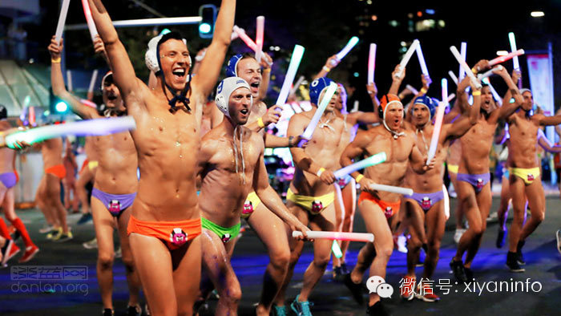
3月1日，澳大利亚悉尼，同志狂欢大游行
本届游行从傍晚一直持续到夜间，共出现145辆造型各异的彩车，沿途喷洒的闪光彩片多达405公斤，让整个夜晚充满奇幻色彩。
游行参加者除了当地民众和游客之外，还包括公开同性恋者身份的华裔政治家黄英贤等政府官员，以及国防军、警方等公共服务部门和各党派的人士。澳大利亚女歌手黛尔塔·古德莱姆(Delta Goodrem)也在彩车上亮相，为现场歌迷献上精彩表演。
全球最著名的豪华邮轮之一“伊丽莎白女王号”周六正好停靠悉尼港，船员们特意在邮轮顶部升起巨大的彩虹横幅，祝人们“狂欢节快乐”。
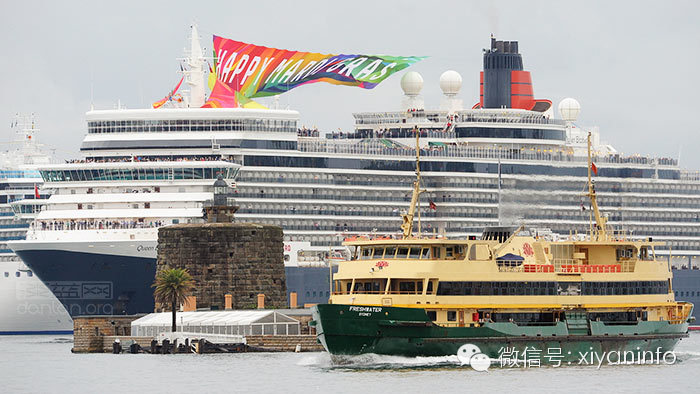
今年的游行以“万花筒”为主题，灵感来自澳大利亚著名导演巴兹·鲁曼(Baz Luhrmann)，他本人也参加了游行。巴兹·鲁曼以华丽风格享誉影坛，代表作品有《罗密欧与朱丽叶》、《红磨坊》、《了不起的盖兹比》等影片。
游行中不仅有欢歌劲舞，还出现一些抗议活动。有一支队伍带着粉红色的Daleks(英剧《神秘博士》中的外星人)参加游行，呼吁“消灭恐同症”；人权组织“大赦国际”的团队中出现讽刺普京的巨型木偶和画像，抗议俄罗斯的反同性恋法规；还有100多位来自圣公会、浸信会等教派的信徒在神职人员率领下，高举“婚姻平等”标语牌向前行进。
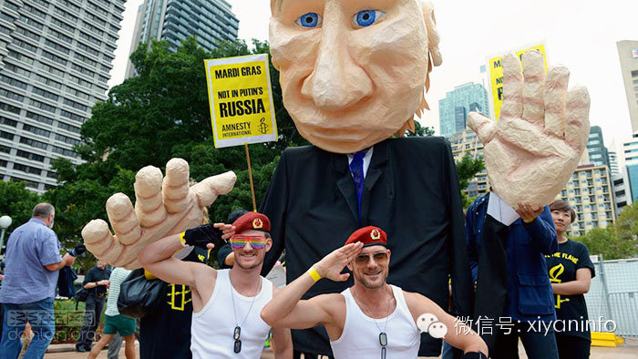
悉尼同志游行始于1978年，最初是为了抗议社会对同性恋群体的歧视，如今已发展成仅次于跨年烟花秀的大型狂欢活动，每一届都为当地带来数千万元经济收益。
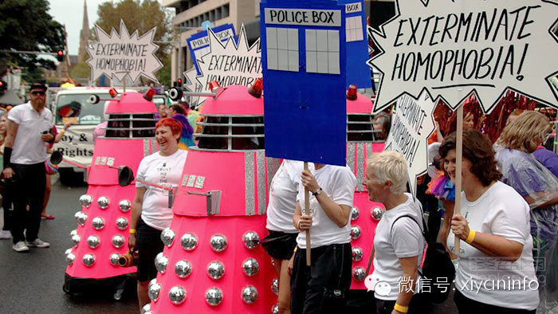
“Daleks团队”呼吁“消灭恐同症”
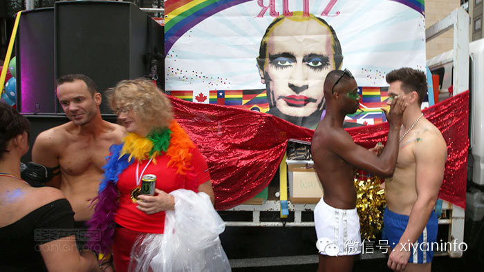
抗议普京侵害同性恋人权
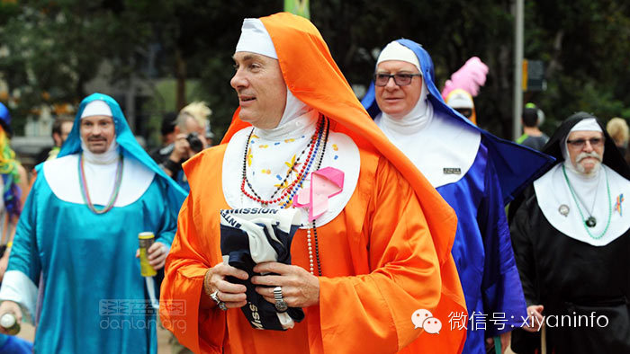
支持婚姻平等的宗教界人士
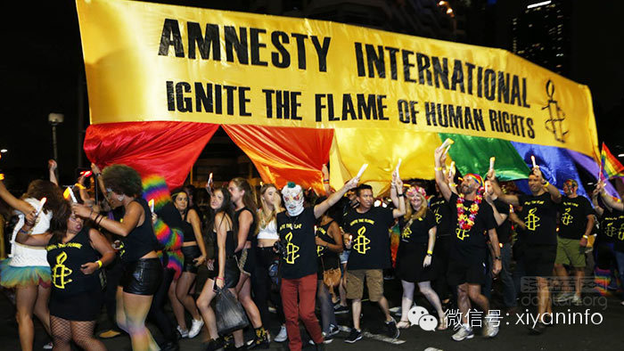
人权组织“大赦国际”
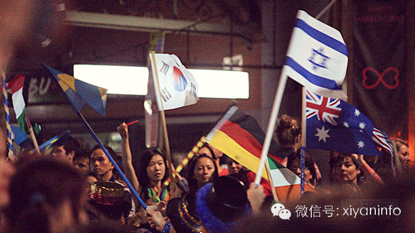
多国人士参加悉尼同志游行
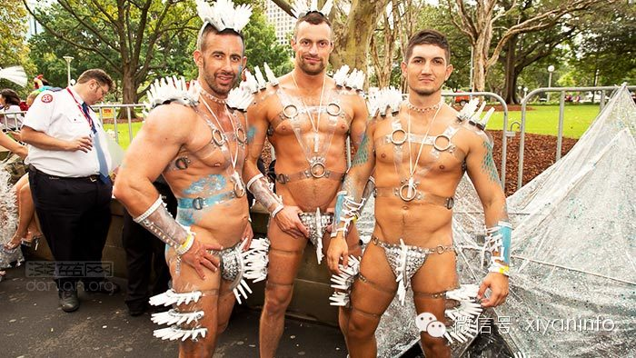
2014悉尼同志狂欢游行
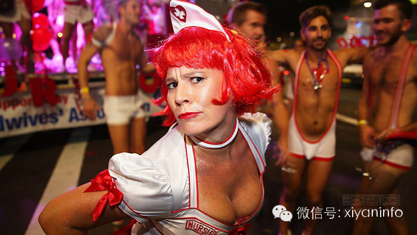
2014悉尼同志狂欢游行
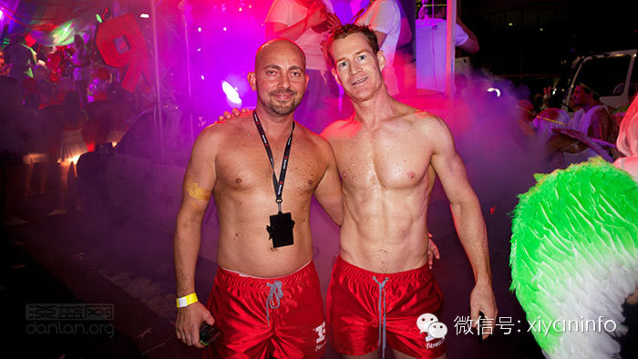
2014悉尼同志狂欢游行
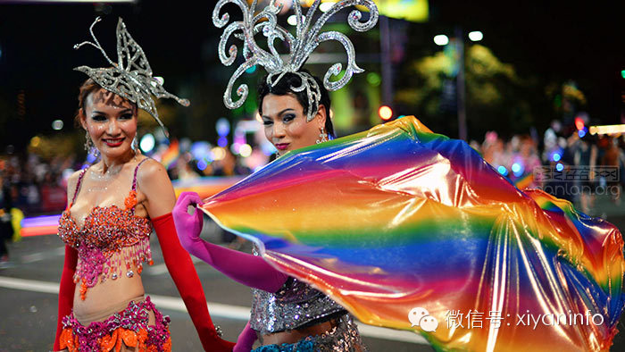
2014悉尼同志狂欢游行
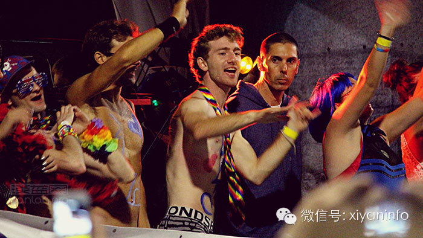
2014悉尼同志狂欢游行
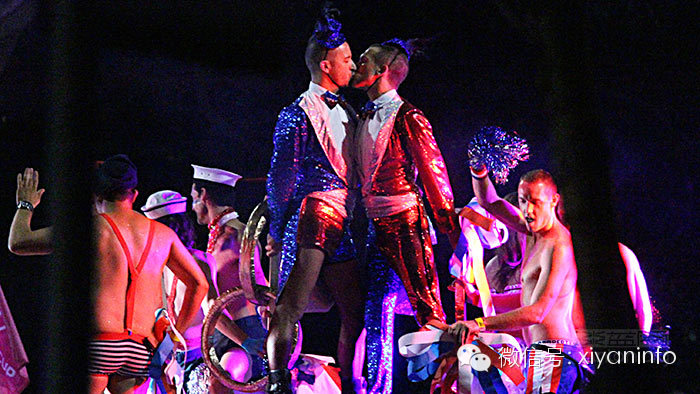
2014悉尼同志狂欢游行
如何联系夕颜？
深圳夕颜现已开通了主页、QQ、微信、微博、飞赞等方式。
1.网址：http://www.xiyan.info
2.电邮：sz.xiyan@gmail.com
3.QQ：1257645143
4.新浪微博：@深圳夕颜 http://weibo.com/xiyansz
5.官方微信：搜索”xiyaninfo“ → 添加好友。或直接扫描底部的二维码。
 欢迎各位小主留言给我们的公众账号，可以跟主页君聊(tiǎo)天(xì)、咨询性艾知识以及相关法律法规等等。
欢迎各位小主留言给我们的公众账号，可以跟主页君聊(tiǎo)天(xì)、咨询性艾知识以及相关法律法规等等。